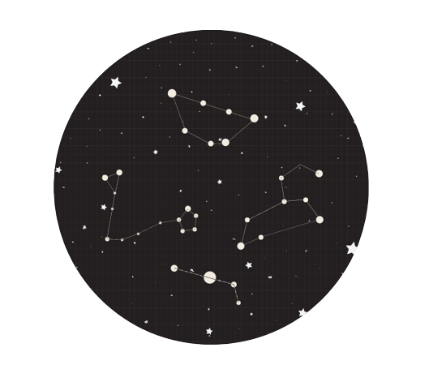
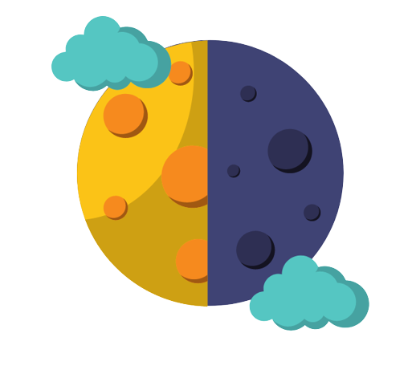
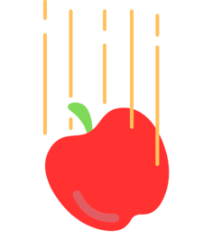
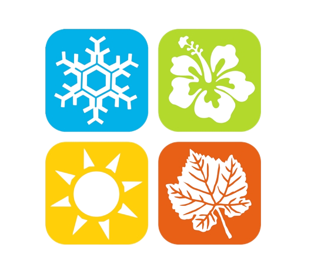
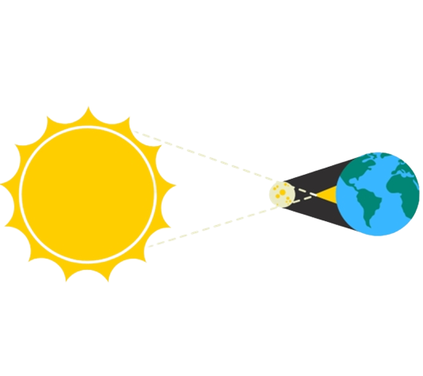

Constelações
Ao observar o céu num determinado local do planeta, por exemplo, o Brasil, o conjunto de estrelas (constelações) que pode ser visto é diferente das estrelas que são vistas em outros países. Dessa forma, se a Terra realmente fosse plana todos poderíamos ver o mesmo conjunto de estrelas.
Dia & Noite
Já percebeu que quando é noite num determinado local do globo no outro já é dia? Isso se deve às diferentes posições geográficas que levam a diferentes intensidades de raios solares. Assim, temos fuso-horários e duração do dia distintos. Além disso, há locais próximos aos polos que possuem dias de 24h seguidas e noites de 24h seguidas.
Navegação Marítima
Certamente se houvessem bordas na Terra uma das inúmeras grandes embarcações que viajam pelo mundo todo já as teria encontrado. Mas, ao contrário disso, essas embarcações viajam circulando o mundo todo e conseguem voltar para o local de partida.

Eclipse Lunar
O eclipse acontece quando há o escurecimento de um astro provocado quando outro impede a chegada completa ou parte da luz até ele. O eclipse lunar ocorre quando a Lua fica escurecida pelo fato da Terra estar em sua frente impedindo que a luz do Sol chegue até ela.

Gravidade
A gravidade é responsável por puxar os elementos para o centro da Terra e ela pressiona através de um forte campo gravitacional fazendo com que o planeta Terra adquira um formato redondo. Isso também pode ser percebido em outros corpos celestes como a Lua, por exemplo.

Estações do ano
Devido a diferença de intensidade solar recebida pelo formato esférico da Terra as estações do ano ocorrem em épocas diferentes. Enquanto o hemisfério sul está recebendo uma intensidade de luz maior, o contrário ocorre no hemisfério norte e vice-versa.
Horizonte
Ao observar um carro se movimentando no horizonte, logo se percebe que à medida em que ele vai se afastando vamos perdendo partes dele de vista até que ele some completamente. Caso a Terra fosse plana, não haveria variação de ângulo, ele sempre estaria no mesmo ângulo de visão.

Eclipse Solar
O eclipse solar é quando a Lua se "intromete" na frente da Terra (entre o Sol e a Terra) e produz uma “sombra” ao olhar para o Sol. Esse evento é muito raro em alguns locais do globo, ou seja, se a Terra fosse plana todos veríamos ao mesmo tempo.
Movimentos da Terra
Você já deve saber que a Terra dá uma volta em torno do seu eixo, ou seja, de si mesma, movimento chamado de rotação, cuja duração é de aproximadamente 24h e é a partir daí que surgem o dia e a noite.